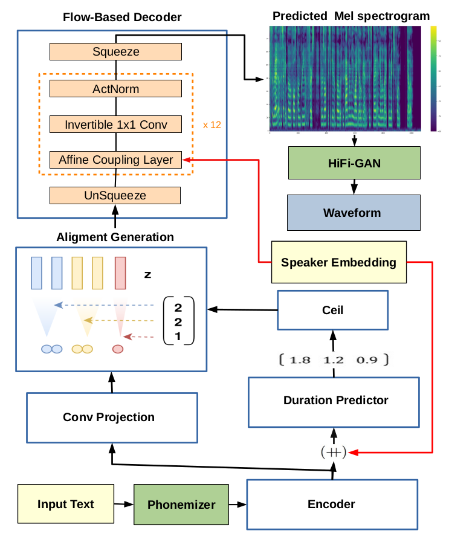

SC-GlowTTS: An Efficient Zero-Shot Multi-Speaker Text-To-Speech Model
Edresson Casanova, Christopher Shulby, Eren Gölge, Nicolas Michael Müller, Frederico Santos de Oliveira, Arnaldo Candido Junior, Anderson da Silva Soares, Sandra Maria Aluisio, Moacir Antonelli Ponti
Abstract:
In this paper, we propose SC-GlowTTS: an efficient zero-shot multi-speaker text-to-speech model that improves similarity for speakers unseen in training. We propose a speaker conditional architecture that explores a flow-based decoder which is able to work in a zero-shot scenario. As text encoders, we explored a dilated residual convolutional-based encoder, gated convolutional-based encoder and transformer-based encoder. Additionally, we have shown that adjusting a GAN-based vocoder for the spectrograms predicted by the TTS model on the training dataset can significantly improve the similarity and speech quality for new speakers. We showed that our model can converge in training, using only 11 speakers, reaching state-of-the-art results for similarity with new speakers and speech quality.
System architecture:

Audio Samples for VCTK test sentences
Model + HiFi-GAN-FTTrained using 98 speakers:
| Model | Unseen Speakers (test) | |||||||||||
| p225 | p234 | p238 | p245 | p248 | p261 | p294 | p302 | p326 | p335 | p347 | ||
| Emb reference | ||||||||||||
| Ground truth | ||||||||||||
| Tacotron 2 | ||||||||||||
| SC-GlowTTS-Trans | ||||||||||||
| SC-GlowTTS-Res | ||||||||||||
| SC-GlowTTS-Gated | ||||||||||||
Trained using 11 speakers:
| Model | Unseen Speakers (test) | |||||||||||
| p225 | p234 | p238 | p245 | p248 | p294 | p302 | p326 | p335 | p347 | p261 | ||
| Emb reference | ||||||||||||
| Ground truth | ||||||||||||
| SC-GlowTTS-Trans | ||||||||||||
Audio Samples MOS sentences (LibriTTS test clean)
Model + HiFi-GAN-FT| Model | Unseen Speakers (test) | |||||||||||
| p225 | p234 | p238 | p245 | p248 | p261 | p294 | p302 | p326 | p335 | p347 | ||
| Emb reference | ||||||||||||
| Tacotron 2 | ||||||||||||
| SC-GlowTTS-Trans | ||||||||||||
| SC-GlowTTS-Res | ||||||||||||
| SC-GlowTTS-Gated | ||||||||||||
| SC-GlowTTS-Trans - 11 speakers | ||||||||||||
Zero-Shot Voice Conversion
SC-GlowTTS-Trans + HiFi-GANThis does not use HiFi-GAN-FT so the quality depends a lot on the reference audio, feel free to adjust the model
The rows present the ground truth audios converted into the voice of the speakers of each column.
| Model | Unseen Speakers (test) | ||||||||||||
| Ground truth | p225 | p234 | p238 | p245 | p248 | p261 | p294 | p302 | p326 | p335 | p347 | ||
| p234 | |||||||||||||
| p245 | |||||||||||||
| p261 | |||||||||||||
| p294 | |||||||||||||
| p326 | |||||||||||||
| p335 | |||||||||||||
| p347 | |||||||||||||
| p238 | |||||||||||||
| p248 | |||||||||||||
| p302 | |||||||||||||
| p225 | |||||||||||||
Citation
Submitted to INTERSPEECH 2021